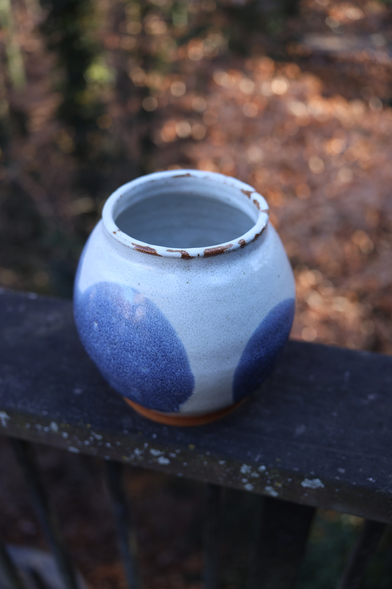

1 / 5White Jar with Blue Dot 2025
About This Piece
This jar bridges two ceramic traditions—the blue and white porcelain I grew up seeing in my family, and the contemporary stoneware practice I work in today. Rather than replicating Chinese porcelain, this piece translates its visual language onto brown stoneware, creating something that honors both heritage and current making.
Cultural Connection
Blue and white porcelain has been part of Chinese ceramic tradition for centuries, and it was a familiar presence in my family home. Those pieces carried a particular aesthetic—white backgrounds with blue imagery that ranged from landscapes to abstract patterns. This jar takes that visual memory and applies it to my current material palette.
Working with brown stoneware instead of white porcelain changes the piece fundamentally. The clay body is earthier, more textured. The white glaze sits on top rather than being the clay itself. This creates a different relationship between form and surface.
The Glaze Application
The piece is first dipped in Stan's white glaze to create the base layer. Then, the bowed sides are dipped in blue glaze, creating the spotted effect where the two glazes overlap. This isn't painted decoration—it's the result of how the glazes interact during the dipping process.
The blue spots appear where the jar's curved form creates natural dip lines. Each angle changes how much blue glaze adheres to the white base. The process is controlled but not precise—the exact pattern is determined by the form's geometry and how the glaze flows.
Form and Function
The jar's rounded shape with a slightly tapered opening serves practical use—as a storage vessel, vase, or simply as a sculptural object. The form is straightforward, allowing the glaze interaction to be the visual focus. The brown stoneware foot remains exposed, grounding the piece in its material reality.
Making Process
Wheel-thrown from brown stoneware clay and trimmed to refine the wall thickness and foot. After bisque firing, the piece was dipped first in white glaze, then strategically dipped in blue to create the overlapping spots. The cone 06 firing temperature allows both Stan's white and blue glazes to mature properly, creating the smooth, glassy surface.
This lower firing temperature (cone 06) differs from traditional high-fire porcelain but suits the brown stoneware body and these specific glazes. The entire process from throwing to final firing took approximately four weeks.